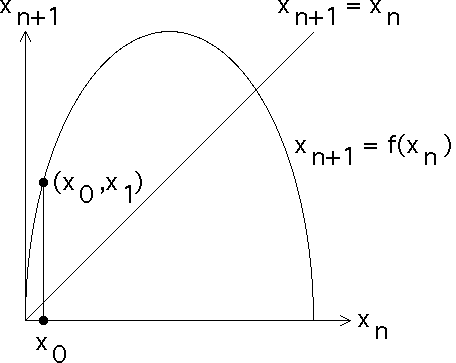

|  |
| From the point x0 on the x-axis, we draw a vertical
line until we intersect the graph of |
| Points on a vertical line have the same x-coordinates, so the x-coordinate of the point of intersection is x0. |
| Consequently, the y-coordinate is
|
| That is, the vertical line
intersects the graph of |
| Click the picture to see the next step. |
Return to Graphical Iteration